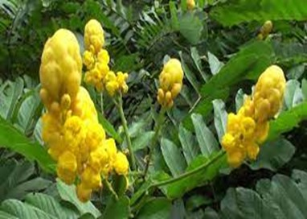
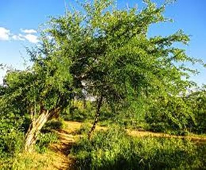
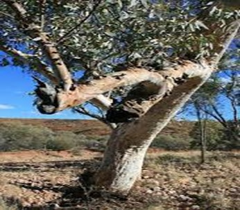
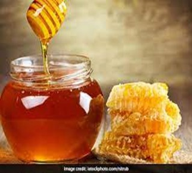

.jpeg)
This has been a tough question to answer since I do not know how much nature influences me and to what extent it influences me and knowing where I come from influences me? I found everything laid down for me such as the 8-4-4 system. The question is after the last 4 of the 8-4-4 system, where do I go next? A recall after 8 years of studies, I go to high school for another 4 years, then another 4 years I go to the university, immediately, I am told that I am an adult. The question is why do you plan my early life and in my old age, you want me to start figuring out life? Why are you teaching an old dog, new tricks?
Does where I come from, influence where I am going? Nature or nurture, I wish I knew that which is most important, because when life is tough, that is when we face our biggest challenges. It will be nice to know which part of our identities we draw strength from. Since my professor did not specify the method of discussion, I decided to involve discussions among my colleges, to understand their view towards the topic. Fake names will be used for their discretion.
Lucia: My life is centered around the books and I am used to winning every activity, book contest, performance award.
Me: I asked about outside the school work, what does she do?
Lucia: I am trying to figure out who I am.
Brian: I had lost in my favorite football game to Arsenal, so, I do not recognize myself again.
Me: (Brian crying, placing a gentle pat on his shoulder) it is okay.
Chris: I am the best performer in his class and yet I felt that I lack something. My identity is tied to how much I work for my grades and my overall best performance. I come from a family of singers, but I got the scholarship of books to join this campus. Therefore, this makes me the first to go to university with the scholarship of good performance(merit). I have a deadly disease and I feels that what I have worked for is gone. This means that knowing your family tree and everything is a part of me, but it is not me, so, you still have to figure it out and find something new. (shows a face of worry )
Kisha: (excited) She feels that she belongs to nature and that she is a strong Black Kenyan woman and she is proud coming from two different culture households. There are parts that I do not know about the family, since after my parent’s marriage, the family members cut them off. However, in the absence of those parts of identity that I do not know, I cling to those that I know for example, I love dancing and dance comes from my mother’s side and her culture and also take care of those come from my father’s side. All those things make up the identity that I am today.
Me: We always focus on what we do not know rather than what we do know. What I feel is that the nature is the gift and nurture is what you do with the gift. (handshakes)
In conclusion, the truth of the matter is that it does not matter which part of our identity we draw from as long as we develop an identity to draw from. In the past, it was okay, to feel inadequate, you feel like you do not fit it and that without knowing any of your identity, you will not know any of the identity. We have to know ourselves because, the pieces we do have are always enough for now and there is resilience for that. Look at the Africans example Toni Morrison, Zora Neale Hurtston, Wilma Rudolph so much of our culture and connections to our ancestry home was taken away from us and because of that, you can argue the inert nature of the black.
Dawa ya jadi inajumuisha nyanja za matibabu za maarifa ya jadi ambayo yalikua vizazi vingi ndani ya mwongozo wa mababu wa dawa anuwai. Shirika la Afya Ulimwenguni ( WHO ) inafafanua dawa ya jadi kama jumla ya maarifa, ustadi, na mazoea kulingana na nadharia, imani, na uzoefu wa mababu zetu wa tamaduni tofauti, ikiwa inaweza kuongezeka au la, kutumika katika utunzaji wa afya na vile vile katika kuzuia, utambuzi, uboreshaji au matibabu ya ugonjwa wa mwili na akili.
Haina madhara kusema chakula ni dawa. Tiba ya Kiafrika ni jumla ya maarifa, ustadi, na mazoea ya nadharia, imani, na uzoefu wa asili kwa tamaduni tofauti. Dawa ya jadi inanunuliwa kwa kawaida kwani ni chakula chetu cha kila siku kwa mfano, ‘ thabai ’ hutumiwa kawaida kama mchicha na ugali nyumba ya Agikuyu. Hii inamaanisha kuwa kula afya ndio njia salama na rahisi zaidi ya kuwa na afya.
KAMBA
Ndetema
Kwa Kiingereza inaitwa ugonjwa wa malaria. Ugonjwa huo unasababishwa na mbu na kitu chochote ambacho mbu huwasiliana nacho. Ugonjwa huu una dalili tofauti za homa, baridi, maumivu ya kichwa na jasho.
Matibabu:
a ) Musemei- dawa hii hupatikana kwenye gome la miti. Musemei huwekwa katika maji ya joto na kuruhusiwa kufuta. Mgonjwa basi inahitajika kuchukua.
b ) Kiluuma ( aloe vera ) – unapunguza sap na dilute katika maji ya joto. Mgonjwa anahitajika kuchukua.
b ) Masilingi
Kwa Kiingereza huitwa pete. Ugonjwa unaohusishwa na matangazo ambayo ni poda nyeupe kwenye mwili zaidi kichwani. Matibabu: ) Mukuswi – pia inajulikana kama pombe ya Acacia. Mgonjwa hutafuna sehemu na dutu inayozalishwa inatumika kwenye eneo lililoathiriwa.

c ) Kyla kya maeo ( maumivu ya meno )
Hali ya mshirika ambapo meno yana maumivu wakati wa kutafuna na kuchukua maji baridi. ) Ndungu-hii ni matunda ya mti baridi mutungu. Matunda hutafuna na kumwagika dutu iliyobaki na wakati wa kumwagika maumivu ni kupumzika.

d ) Musanduku
Magonjwa ambayo husababisha uvimbe kwenye mwili ambao hukasirisha. Imerejelewa kama pox ya kuku kwa Kiingereza. Matibabu. ) Musanduku ( gum nyekundu ya mto ) - majani yao yamechemshwa na mvuke inayozalishwa wakati wa kuchemsha itapigwa na mgonjwa.

e ) Asali
Asali hutumiwa kama tamu ya dawa. Dawa zingine ni chungu sana ingawa zinasaidia. Asali hupatikana kutoka kwa nyuki.

Beginning The story of my campus life is an epic one. To begin with campus was just a ritual to complete my 8-4-4 Kenyan system of being a learned fellow. I always admired each time I heard my parents teasing themselves and with their friends and all they said was my learned fellow. This made me grow up desiring the good of the land and to become the best thing every person desire by going after my dream and believing in myself. I hate being a fool or receiving any actions that resemble fools. Good friendship is the key to any successful life and the sweetest journey as one fulfills her desires. It is said a man who walks alone walks the fastest, but a man who walks with people walks the furthest. It is important to say that my campus life wouldn’t be more perfect if my friends were not in it. I bult strong friendship when I first joint campus. We have had all the phases of friendship, but what is worth while noting is that those experiences have shaped me to be who I am today. I once attended a mentorship program and I was told that the first friends you make in campus will determine your four years stay or I rather say completion of campus. Honestly, I can say that I witnessed this forehand as I watched my course mates, school mates, drop out of school for various reasons and one of them being bad company. It is therefore important to say that bad company ruins good morals. Campus life fun moments are too personal to an individual and they differ from person A to person B. My campus story had different shapes and sizes but maximumly I have enjoyed it by lecturers, friends, course mates, school mates, hostels mate, business people, work places, and myself. I have seen all sides of a coin and as I complete my tenure, I would love to thank Dedan Kimathi University of Technology for spicing up my life and making a huge difference in it holistically. The mission statement is to provide academic stimulating, culturally diverse, and quality learning environment that fosters research, innovation and technology development towards producing relevant technical and managerial human resource and leaders to contribute to attainment of goal. The vision statement is to be premier technological university excelling in quality education, research and technological transfer for national development. This mission statement has been a great pillar to me as a student and I can attest to the fact that through the diverse and quality learning environment has fostered my leadership, academic and spiritual nourishment. Dedan Kimathi as the mission says has bettered my life through self-actualization, and attaining solutions to global challenges through spirit of dedication, self-confidence, determination and best utilization of resources. I appreciate. I would love to split my story in various phases as follow:
Dedan Kimaathi Waciuri , born Kimathi wa Waciuri in what was then British Kenya, was the senior military and spiritual leader of the Mau Mau Uprising. Widely regarded as a revolutionary leader, he led the armed military struggle against the British colonial regime in Kenya in the 1950s . He fought for freedom struggle against British colonial rule, while the British government saw him as a terrorist. He was our freedom fighter, who was renowned by all for his vigilance in our country’s freedom until his capture in 1956 and execution in 1957. Kimathi is credited with leading efforts to create formal military structures within the Mau Mau, and convening a war council in 1953. He, along with Musa Mwariama and Muthoni Kirima, was one of three Field Marshals. Kenyan nationalists view him as the heroic figurehead of the Kenyan He fought in the Mau-forest for years and his reward was to be betrayed by one of our own and killed by a mzungu. Kimaathi had being reigning for a long time and has the best calculated moves and had great understanding of ‘maat’ that is truth and justice. He fought for my black color to be me. Dedan kimathi university was named after him as a way to celebrate him. Dedan Kimathi University of technology was named and started after our hero Dedan Kimaathi Waciuri. It is a symbol or I rather say a reward to his family for producing the best seeds that saved our nation from the barbaric hands. The university started as a middle-level national technical and business-oriented learning institution in 1972 and was elevated in 2007 to a constituent university college of Jomo Kenyatta University of Agriculture and Technology through a Kenya Gazette notice to become a full-fledged university in three years. Later on the late former president, Mwai Kibaki, a Nyeri resident located in Othaya, gave the university a charter to operate on its own as a university in Kenya. From 2019, the university in collaboration with the Kenyan government sponsored my education for the next four years. Giving it away. Being a class representative of my class for several years is an uphill task. Maintaining a balance among what the lecturer wants, student wants and what I want is not easy. Misunderstandings were the better cake in a day and any day that lacked misunderstanding would be termed as a good day. I would love to speak about my favorite lecturer, who against all odds, spoke his mind on any given point and always had an upper hand on every matter. Professor Osotsi, a Ph.D. holder always says,’mwacha mila ni mtumwa’. Despite his vast knowledge and travelling abroad to teach his favorite subject as he said, he came to our prestige university to enlightened us, negros. His passion towards being proud Africans especially true Kenyan patriot is amazing and one of the things that drives me into tapping more into his ideas, views on every cultural matters. Culture has been neglected in our nation such that for us to know where we are heading or planning for our future, we consult other people(white people) to show us the path. We do not know our roots (where we began). We now depend on social media, lecturers, to tell us our roots after ignoring our fore- father’s instructions to pass knowledge from generation to generation. This information we obtain is not necessarily the truth. It is sad as we cannot distinguish the truth from lies.
 LINKD IN
LINKD IN FACEBOOK
FACEBOOK TWITTER
TWITTER WHATSAPP
WHATSAPP EMAIL
EMAIL